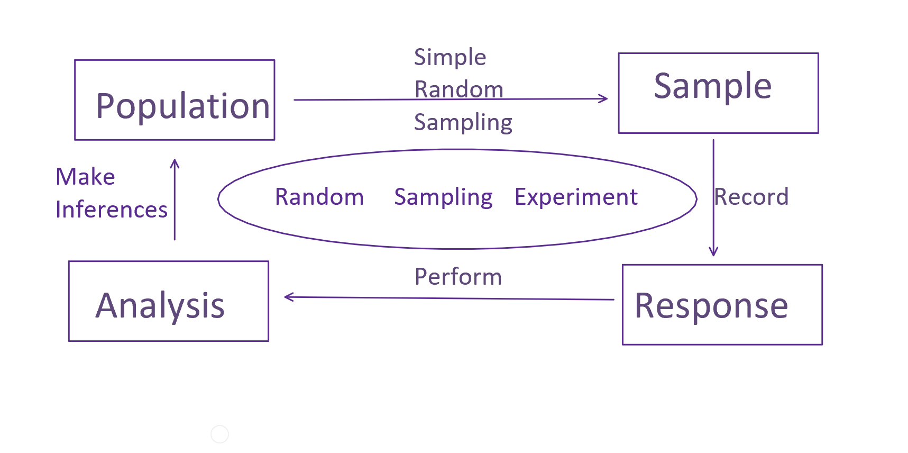

Chapter 2 Experiments and the role of probability
In this chapter we introduce concepts related to scientific studies, data collection, and random sampling.
2.1 Experiments
There are many settings in which data is collected and studied. In this course we will limit our focus to random sampling experiments and random sampling, randomized intervention experiments defined below.
Both of these settings start with a research question of interest in the the context of a population or set of individuals. For example, in a political poll the population is the set of eligible voters and the research question is “which of two candidates has majority support?”
Experiments like polls necessarily only measure an outcome or response (like voter preference) for a limited number of individuals from the population. The collection of observed individuals is the sample. For many reasons relating to, e.g., cost, time, and access, the size of the sample is small compared to the size of the population. On the other hand, there are rare instances in which a whole population is observed, and we call this a census. In a census, all possible information is gathered, whereas in an experiment only a limited subset of information is obtained. We will be concerned only with experiments and how best to use the limited information gathered in order to answer research questions.
When only a sample of a population is available a natural question is “how is the sample determined?” If there is freedom in the choice of sample then “how should the sample be chosen?” Intuitively, if we can only observe some of the individuals belonging to the population then we prefer to observe a representative sample of them. Representative means that the heterogeneities/differences between individuals that exist in the population ought to be more or less accurately reflected in the sample. For example, a poll of eligible voters in Iowa is not representative if it includes only registered Democrats, and we would not expect such a poll to accurately reflect the population preference between two candidates. If we have a representative sample from the population then we assume the results of our experiment are generalizable to the population. In other words, the observations we make are characteristic of the population and we would not expect vastly different observations had we obtained a different, similarly representative sample, or if we had observed the whole population. There are different ways to obtain representative samples. One way is via stratified sampling. For example, suppose we knew or could measure the relative population proportions of all factors relevant to voting preference, say, party affiliation, sex, age, income level, education level, and religious affiliation. Then, we could construct a sample of individuals with values of these demographic variables matching the levels present in the population—a representative sample—by randomly selecting the right number of individuals from each of these subgroupings or strata. However, this takes a lot of information to pull off. Instead, researchers typically attempt to construct a simple random sample of individuals from the population. A simple random sample (SRS) of size \(n\) from a finite population means every subset of \(n\) individuals is equally likely to be chosen. You can imagine a SRS as pulling numbers out of a hat, so to speak. An SRS of eligible voters could be constructed, for instance, by randomly choosing 100 social security numbers from the list of SSNs of all eligible voters. SRSs are not always trivial to construct—as in the polling example they require a list of population individuals, which may be difficult to obtain.
We are at the point where we can define a random sampling experiment as the process by which we select a SRS from a population and record a response from sampled individuals for the purpose of answering a research question. As noted, an important example is a poll.
Random sampling experiments are valuable, but limited to addressing questions about one variable at a time. In many cases researchers are interested in how one variable affects the value of another, and these questions can often be answered using interventional experiments. An intervention is an act by a researcher intended to affect the value of the response variable in sampled individuals. When an intervention is applied to samples the samples are often referred to as experimental units. An important example of an interventional experiment is a clinical trial. In a basic clinical trial a random sample of patients is recruited from a population of patients with a certain medical condition. Then, a subset of the patients is given a treatment of interest — the intervention — while the other patients are given a different treatment or perhaps no treatment at all (maybe a placebo). The response, probably related to the health of patients post-treatment, is then compared between the intervention and non-intervention groups. This experiment is like a random sampling experiment with an added intervention step. The key question is “how do we determine which experimental units receive the intervention?” Recall that when we obtain a sample of individuals from a population we wish to do so in such a way as to obtain a representative sample. The same idea applies to interventions. The group of samples receiving the intervention should be similar to the group not receiving the intervention; that is, both groups should be representative of the total set of sampled individuals. Therefore, it makes sense to randomize the application of the intervention over sampled individuals.

A random sampling, randomized intervention experiment consists of obtaining a SRS from a population, randomizing an intervention over those samples, and recording a response variable relating to a research question. This type of experiment is often explained by conceptualizing two (or more) different populations. Suppose the experiment is a clinical trial and the intervention consists of receiving a treatment versus no treatment. Then, we can interpret the randomization step as defining two SRSs from two (abstract or hypothetical) populations: a sample from the set of treated patients and a sample from the set of untreated patients. The research question typically concerns the relationship between these two populations, such as, “are treated patients, on average, healthier than untreated patients, with respect to the response variable?”
We will only consider randomized interventional experiments. Briefly, consider what can go wrong if we do not randomize intervention. Suppose the patients in our clinical trial consist of both old and young people and that old people are generally more in need of treatment. If we give the treatment to only young(old) people, then we will underestimate(overestimate) the effect of the treatment compared to what its effect would be, on average, over the whole population. In effect, we have confounded the treatment/intervention effect with the effect of age on the response. This may seem like a silly example because we could easily avoid assigning the intervention to only young or only old people. But, not all potential confounding variables are obvious/visible. Unknown confounders, also called lurking variables, can only be systematically accounted for via randomizing the intervention. Of course it is possible for randomized groups not to be representative in a particular occurrence, but, systematically, randomized groups will tend to be representative, so it’s a good practice.
When the intervention is randomized we cautiously assume substantial differences in the observed responses between intervention groups can be attributed to the intervention. In other words, we believe in causation—that the intervention caused the observed differences. When confounding variables are present we never know which variable is responsible for observed differences in responses and we cannot support claims about cause and effect relationships using the data alone.
In some studies researchers analyze the relationships between variables without performing randomized interventions; these are usually observational studies. For instance, in the Framingham Heart Study, researchers recorded the health and lifestyle choices of Massachusetts residents over several years. By collecting a large amount of data they were able to establish a strong relationship or association between cigarette smoking and cancer. Their data alone is not enough to imply causation, but their study inspired many follow-up experiments like lab experiments on animals, and the development of biochemical theories about tumor development. The combination of these various works leaves little doubt today that tobacco use dramatically increases the likelihood of developing cancer.
2.2 The role of probability
Consider the example of a political poll on the preferences of voters between two candidates—this is a random sampling experiment. The population consists of all eligible voters in the upcoming election. Each voter can be associated, say, with a 1 or a 0, indicating their preference between the two candidates. Let these 0-1 preferences be denoted \(x_1, \ldots, x_N\) where \(N\) is the population size. There exists a population level value \(\theta\) equal to
\[\theta:=N^{-1}\sum_{j=1}^N x_j\]
denoting the population voter preference; this is the population proportion. Most research questions of interest concern the unknown value of \(\theta\). In the polling experiment we observe a random subset of \(x_1, \ldots, x_N\) values, say, \(X_1, \ldots, X_n\) for \(n<N\)—keep in mind these are not the first \(n\) x’s, but a random subset of \(n\) x’s. Correspondingly, we can compute the sample voter preference
\[\hat\theta_n := n^{-1}\sum_{i=1}^n X_i.\]
For every possible sample of \(n\) voters, there is a corresponding value of \(\hat\theta_n\). We can think of the polling experiment as randomly choosing one of these \(\hat\theta_n\) values out of a hat containing all of them. Randomly sampling voters causes randomness in the observed \(\hat\theta_n\) preference value. The mathematics of probability is used to quantify this randomness, e.g., to be able to compute the chance of \(\hat\theta_n\) taking on any particular value, given knowledge of the population.
That last phrase “given knowledge of the population” is very important, and illustrates the difference between probability and statistics (inference) quite succinctly. Probability characterizes the chance of observing a particular random sample given the population, whereas statistics seeks to explain some characteristic of the unknown/unobserved population given only one sample (subset of population individuals).
Probability plays a key role in statistics problems, and the first part of our course is devoted to developing methods for computing probabilities of samples in a variety of useful special cases.
Let’s illustrate this interplay of probability and statistics by continuing the example of a poll. The population, again, can be represented by \(N\) values, each either a \(0\) or a \(1\) indicating each voter’s preferences, and we can label these \(x_1, \ldots, x_N\). A poll is a random sample of \(n\) of these values, labeled \(X_1, \ldots,X_n\), without replacement, i.e., once a value \(x_j\) is selected and recorded it cannot be selected again (no double voting!). The population preference \(\theta\) is the average of \(x_j\)’s for \(j=1, \ldots, N\). If we knew the size of the population \(N\) and the population proportion \(\theta\), then we could compute the chance of observing any \(\hat\theta_n := n^{-1}\sum_{i=1}^n X_i\) value according to the rules of probability (which we will soon study). For example, if \(N\) is much larger than \(n = 10\) and \(\theta = 1/2\), then the chance of observing exactly \(\hat\theta = 1/2\) is about \(25\%\) (it’s about equal to \(252\theta^5(1-\theta)^5\)). Of course, the whole point of the poll is to learn something about the unknown value of \(\theta\), so we cannot actually perform this probability calculation in practice. But, consider connecting the probability calculation to our goal. We would like to distinguish between values of \(\theta\) that are more or less plausible. Suppose we conduct the poll of \(10\) individuals and observe \(\hat\theta = 1/2\). Then, our probability calculation says the probability we observe \(\hat\theta = 1/2\) is highest if \(\theta = 1/2\). In other words, \(1/2\) is the most plausible value of the population proportion given our observations. Intuitively, we expect values near \(1/2\) are more plausible than values far from \(1/2\). This correspondence between the probability calculation and plausible values of the population parameter is called the maximum likelihood principle which we will study in a later chapter.
2.3 Exercises
Google James Lind’s Scurvy experiments. What was James’ research question? What was the population? Did he obtain a random sample from the population? If not, does that make you suspicious of his findings? Why or why not? Did James use any interventions? If so did he randomize them? Do you think his randomization scheme is reliable? What were his conclusions?
Find a recent example of an experiment in the news or a scientific publication. Describe the research question, population, intervention (if there is one), and response. Is it a random sampling experiment, a random sample randomized intervention experiment, or something else, like an observational study?
The Challenger space shuttle exploded when it experienced o-ring failures thought to be caused by low launch temperature. The launch temperature was 31 degrees Fahrenheit. The following data can be interpreted as a random sample of counts of o-ring failures from a population of launches. Given this data do you think we can make reliable conclusions about launch safety at 31 degrees launch temperature? What concepts discussed in this section are relevant here?
| at risk | failed | launch temp. |
|---|---|---|
| 6 | 1 | 70 |
| 6 | 0 | 69 |
| 6 | 0 | 68 |
| 6 | 0 | 67 |
| 6 | 0 | 72 |
| 6 | 0 | 73 |
| 6 | 0 | 70 |
| 6 | 1 | 57 |
| 6 | 1 | 63 |
| 6 | 1 | 70 |
| 6 | 0 | 78 |
| 6 | 0 | 67 |
| 6 | 2 | 53 |
| 6 | 0 | 67 |
| 6 | 0 | 75 |
| 6 | 0 | 70 |
| 6 | 0 | 81 |
| 6 | 0 | 76 |
| 6 | 0 | 79 |
| 6 | 0 | 75 |
| 6 | 0 | 76 |
| 6 | 1 | 58 |